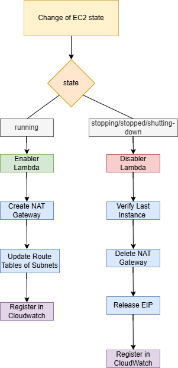
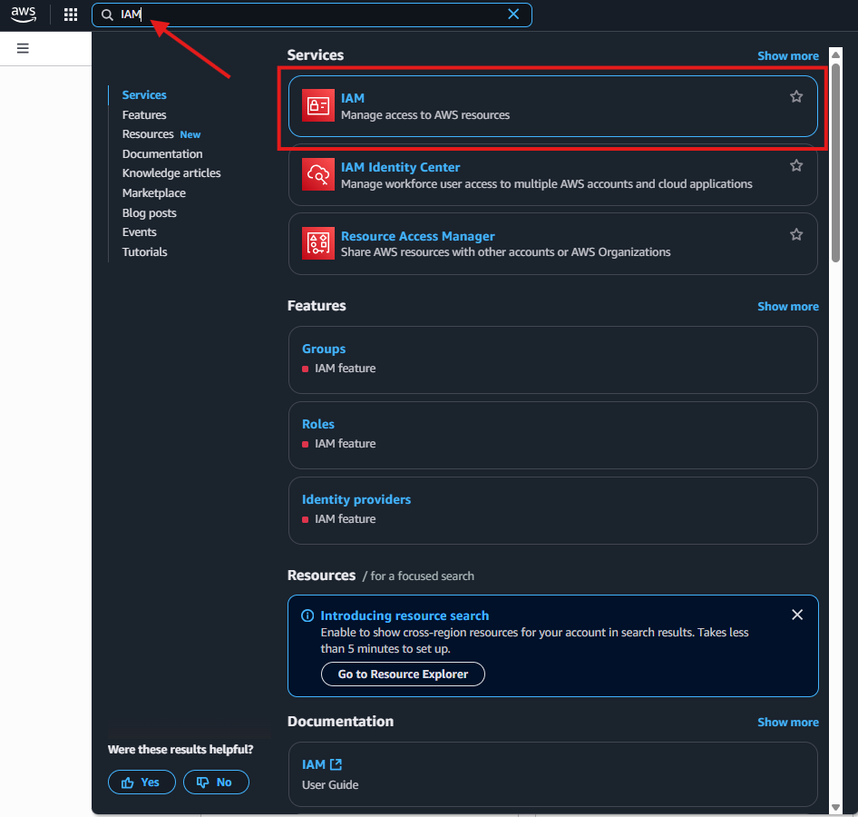
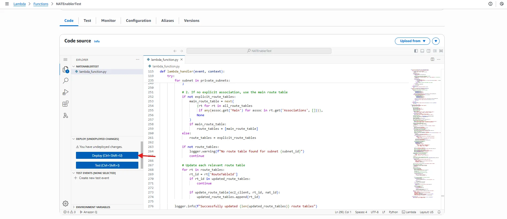

Step by step guide of Automated NAT Gateway and Subnet Management for AWS–Databricks Integration
The main objective is to reduce costs in AWS by eliminating the continuous use of NAT Gateway for environments that only need it temporarily, such as Databric-type work environments or temporary development environments.
The idea here is to trigger two lambda functions, one for creating NAT Gateways and handling subnets and the other to delete NAT Gateways to avoid costs.
For this, the first step is to define the Policy for the Role that’s going to be attached to the Lambda Functions, then we will need to create Rules using the Event Bridge service, to trigger the lambda functions to make this process automated
Complete Flow of Events
{kind=link}

A) Creation of Policy for Role
- Type IAM on the search bar and go the IAM service
{kind=link}

- From there go to the Policies Tab

- Here you can see the policies that already exists and proceed to click the Create Policy button.

- Go to the JSON tab.

5. Replace the default permissions with a new one

- The new JSON contains all the required permissions for the Lambda functions to work correctly and then click on Next.

JSON:
{
"Version": "2012-10-17",
"Statement": [
{
"Sid": "EC2Permissions",
"Effect": "Allow",
"Action": [
"ec2:DescribeInstances",
"ec2:DescribeRouteTables",
"ec2:DescribeNatGateways",
"ec2:CreateNatGateway",
"ec2:DeleteNatGateway",
"ec2:AllocateAddress",
"ec2:ReleaseAddress",
"ec2:AssociateAddress",
"ec2:DisassociateAddress",
"ec2:CreateRoute",
"ec2:DescribeSubnets",
"ec2:DescribeTags",
"ec2:DescribeAddresses",
"ec2:DescribeVpcs",
"ec2:CreateTags",
"ec2:ReplaceRoute"
],
"Resource": "*"
},
{
"Sid": "LambdaLogging",
"Effect": "Allow",
"Action": [
"logs:CreateLogGroup",
"logs:CreateLogStream",
"logs:PutLogEvents"
],
"Resource": "*"
}
]
}- Set a name, description for the Policy and also set a tag for better identification for the AWS administrator, the tag should be Key: Project, Value: Databricks, then proceed to create the policy.

B) Creation of the Role for the Lambda functions
- Type IAM on the search bar and go the IAM service
- Go to the Roles Tab

- Here you can see the roles that already exists and proceed to click the Create Role button.

- Here select AWS service as the Trusted entity type and Lambda as the Use Case, then proceed to click Next

- Here search for the Policy that was created earlier and select it and go Next, if it does not appear, you can edit the role later and add it manually.

- Name your Role and add a brief Description, also don’t forget to add the proper tag Key: Project, Value: Databricks, then proceed to create the Role.

Now that we have the Role associated with the proper Policy, we can proceed on creating the Lambda Functions.
C) Creation of Lambda Functions
- Type Lambda on the search bar and go the Lambda service

- Here you can see the Lambdas that already exists, in this case is already created the Lambdas that we need (Enabler and Disabler), just proceed on clicking the Create Function button

- Here you need to specify Author from scratch, set the Function Name, select Python 3.13 as Runtime, x86_64 as the Architecture and most important, set the existing role that we created earlier, in this case DatabricksLambdaRole, this role have all the permissions needed for both lambdas(Enabler and Disabler) to work properly.

Also add the tag Key:Project, Value: Databricks and then click the Create function button

- Repeat this process for both Lambda Enabler and Disabler.
D) Lambda Enabler and Disabler Configuration
- Click on the function you want to config, in this case the Enabler

- Here you can see the Lambda Console, go to the Code tab and in there you can see the default code that exist.

3) Replace the code with the NAT-Enabler code:
import boto3
import logging
import time
from botocore.config import Config
# === Setup logger ===
logger = logging.getLogger()
logger.setLevel(logging.INFO)
# Configure retries
AWS_RETRY_CONFIG = Config(
retries={'max_attempts': 5, 'mode': 'standard'}
)
def find_public_subnet(ec2_client, vpc_id):
"""Find a public subnet (with route to Internet Gateway) in the VPC"""
try:
# Get all route tables for the VPC
route_tables = ec2_client.describe_route_tables(
Filters=[{'Name': 'vpc-id', 'Values': [vpc_id]}]
)['RouteTables']
# Find subnets with route to IGW
public_subnets = set()
for rt in route_tables:
# Check if route table has a route to IGW
has_igw_route = any(
route.get('DestinationCidrBlock') == '0.0.0.0/0' and
route.get('GatewayId', '').startswith('igw-')
for route in rt.get('Routes', [])
)
if has_igw_route:
# Get all subnets associated with this route table
for assoc in rt.get('Associations', []):
if assoc.get('SubnetId'):
public_subnets.add(assoc['SubnetId'])
if not public_subnets:
raise Exception("No public subnets found (with route to Internet Gateway)")
# Return the first available public subnet
return list(public_subnets)[0]
except Exception as e:
logger.error(f"Error finding public subnet: {str(e)}")
raise
def get_private_subnets(ec2_client, vpc_id, exclude_subnet_ids=[]):
"""Get all private subnets in VPC excluding specified subnets"""
try:
all_subnets = ec2_client.describe_subnets(
Filters=[{'Name': 'vpc-id', 'Values': [vpc_id]}]
)['Subnets']
private_subnets = []
for subnet in all_subnets:
if subnet['SubnetId'] in exclude_subnet_ids:
continue
# Check if subnet has route to NAT (indicating it's private)
route_tables = ec2_client.describe_route_tables(
Filters=[{'Name': 'association.subnet-id', 'Values': [subnet['SubnetId']]}] # Corrected line
)['RouteTables']
is_private = True
for rt in route_tables:
for route in rt.get('Routes', []):
if route.get('DestinationCidrBlock') == '0.0.0.0/0' and route.get('GatewayId', '').startswith('igw-'):
is_private = False
break
if not is_private:
break # No need to check other route tables if one is public
if is_private:
private_subnets.append(subnet)
return private_subnets
except Exception as e:
logger.error(f"Error getting private subnets: {str(e)}")
raise
def update_route_table(ec2_client, route_table_id, nat_gateway_id):
"""Update a route table to point to NAT Gateway"""
try:
# Reemplazar la ruta existente o crearla si no existe
try:
ec2_client.replace_route(
RouteTableId=route_table_id,
DestinationCidrBlock='0.0.0.0/0',
NatGatewayId=nat_gateway_id
)
logger.info(f"Replaced default route in {route_table_id} to NAT {nat_gateway_id}")
except ec2_client.exceptions.ClientError as e:
if "no route with destination-cidr-block" in str(e).lower():
# Si no existía, crear la ruta
ec2_client.create_route(
RouteTableId=route_table_id,
DestinationCidrBlock='0.0.0.0/0',
NatGatewayId=nat_gateway_id
)
logger.info(f"Created new default route in {route_table_id} to NAT {nat_gateway_id}")
else:
logger.error(f"Failed to update route table {route_table_id}: {str(e)}")
return False
return True
except Exception as e:
logger.error(f"Failed to update route table {route_table_id}: {str(e)}", exc_info=True)
return False
def lambda_handler(event, context):
logger.info("NAT Gateway management Lambda triggered")
logger.debug(f"Event: {event}")
try:
# Parse event details
detail = event.get('detail', {})
state = detail.get('state')
instance_id = detail.get('instance-id')
region = event.get('region')
# Validate required fields
if state != 'running':
logger.info(f"Instance state is '{state}', skipping NAT Gateway creation.")
return {"status": "skipped", "message": f"EC2 state is '{state}'"}
if not instance_id or not region:
logger.error("Missing instance ID or region in event.")
return {"status": "error", "message": "Missing instance-id or region."}
# Initialize EC2 clients
ec2_client = boto3.client('ec2', region_name=region, config=AWS_RETRY_CONFIG)
ec2_resource = boto3.resource('ec2', region_name=region)
# Get instance metadata
instance = ec2_resource.Instance(instance_id)
vpc_id = instance.vpc_id
tags = {tag['Key']: tag['Value'] for tag in instance.tags or []}
# Validate instance belongs to Databricks project
if tags.get('Project') != 'Databricks':
logger.info("Instance does not belong to Project=Databricks. Skipping NAT creation.")
return {"status": "skipped", "message": "Project tag is not Databricks."}
# Check if NAT Gateway already exists
existing_nats = ec2_client.describe_nat_gateways(
Filters=[{'Name': 'vpc-id', 'Values': [vpc_id]}]
)['NatGateways']
active_nats = [n for n in existing_nats if n['State'] in ['available', 'pending']]
if active_nats:
nat_id = active_nats[0]['NatGatewayId']
logger.info(f"Using existing NAT Gateway: {nat_id}")
public_subnet_id = active_nats[0]['SubnetId']
else:
# Find a PUBLIC subnet for the NAT Gateway
public_subnet_id = find_public_subnet(ec2_client, vpc_id)
logger.info(f"Selected public subnet for NAT Gateway: {public_subnet_id}")
# Get or allocate Elastic IP
addresses = ec2_client.describe_addresses()['Addresses']
unused_eips = [eip for eip in addresses if 'AssociationId' not in eip and eip.get('Domain') == 'vpc']
if unused_eips:
allocation_id = unused_eips[0]['AllocationId']
logger.info(f"Reusing existing Elastic IP: {allocation_id}")
else:
if len(addresses) >= 5:
logger.error("Cannot create new EIP - limit reached (5 per region)")
return {
"status": "error",
"message": "Elastic IP limit reached. Cannot create NAT Gateway."
}
eip = ec2_client.allocate_address(Domain='vpc')
allocation_id = eip['AllocationId']
logger.info(f"Allocated new Elastic IP: {allocation_id}")
# Create NAT Gateway in the PUBLIC subnet
nat = ec2_client.create_nat_gateway(
SubnetId=public_subnet_id,
AllocationId=allocation_id,
TagSpecifications=[{
'ResourceType': 'natgateway',
'Tags': [
{'Key': 'Name', 'Value': 'AutoNAT-Databricks'},
{'Key': 'Project', 'Value': 'Databricks'},
{'Key': 'ManagedBy', 'Value': 'Lambda'}
]
}]
)
nat_id = nat['NatGateway']['NatGatewayId']
logger.info(f"Creating NAT Gateway {nat_id} in public subnet {public_subnet_id}")
# Wait for NAT Gateway to become available
waiter = ec2_client.get_waiter('nat_gateway_available')
logger.info(f"Waiting for NAT Gateway {nat_id} to become available...")
waiter.wait(NatGatewayIds=[nat_id])
logger.info(f"NAT Gateway {nat_id} is now available.")
# Get all PRIVATE subnets with Project=Databricks tag
databricks_subnets = ec2_client.describe_subnets(
Filters=[
{'Name': 'vpc-id', 'Values': [vpc_id]},
{'Name': 'tag:Project', 'Values': ['Databricks']}
]
)['Subnets']
# Filter out public subnets (including the NAT's subnet)
private_subnets = get_private_subnets(ec2_client, vpc_id, exclude_subnet_ids=[public_subnet_id])
if not private_subnets:
logger.warning("No private Databricks subnets found in VPC!")
return {
"status": "warning",
"message": "NAT created but no private Databricks subnets found",
"nat_gateway_id": nat_id,
"nat_subnet_id": public_subnet_id
}
logger.info(f"Found {len(private_subnets)} private Databricks subnets to update")
# Get ALL route tables in the VPC
all_route_tables = ec2_client.describe_route_tables(
Filters=[{'Name': 'vpc-id', 'Values': [vpc_id]}]
)['RouteTables']
updated_route_tables = []
# Process each private subnet
for subnet in private_subnets:
subnet_id = subnet['SubnetId']
logger.info(f"Processing private subnet: {subnet_id}")
# Find route tables associated with this subnet
route_tables = []
# 1. Check for explicitly associated route tables
explicit_route_tables = [
rt for rt in all_route_tables
if any(
assoc.get('SubnetId') == subnet_id
for assoc in rt.get('Associations', [])
)
]
# 2. If no explicit association, use the main route table
if not explicit_route_tables:
main_route_table = next(
(rt for rt in all_route_tables
if any(assoc.get('Main') for assoc in rt.get('Associations', []))),
None
)
if main_route_table:
route_tables = [main_route_table]
else:
route_tables = explicit_route_tables
if not route_tables:
logger.warning(f"No route table found for subnet {subnet_id}")
continue
# Update each relevant route table
for rt in route_tables:
rt_id = rt['RouteTableId']
if rt_id in updated_route_tables:
continue
if update_route_table(ec2_client, rt_id, nat_id):
updated_route_tables.append(rt_id)
logger.info(f"Successfully updated {len(updated_route_tables)} route tables")
return {
"status": "success",
"message": "NAT Gateway configured and route tables updated",
"nat_gateway_id": nat_id,
"nat_subnet_id": public_subnet_id,
"allocation_id": allocation_id if 'allocation_id' in locals() else None,
"updated_route_tables": updated_route_tables,
"private_subnets_updated": [s['SubnetId'] for s in private_subnets]
}
except Exception as e:
logger.error(f"Error in NAT Gateway management: {str(e)}", exc_info=True)
return {"status": "error", "message": str(e)}
Code Explanation:
This Lambda function is triggered when an EC2 instance transitions to the running state.
Its purpose is to:
Automatically create a NAT Gateway in a public subnet if one doesn't already exist for the VPC, and update the route tables of private subnets in the Databricks project to use that NAT Gateway for outbound internet access.
🔧 Step-by-step behavior of NAT-enabler
1. Event validation
- Extracts
instance-id,state, andregionfrom the triggering EventBridge event.
- Skips execution if:
- State is not
running
instance-idorregionis missing
- State is not
2. Fetch EC2 instance metadata
- Retrieves the instance using Boto3.
- Extracts:
vpc_id
- Instance tags
- Continues only if: Tag
Project = Databricksis present.
3. Check if a NAT Gateway already exists
- Uses
describe_nat_gatewaysto find existing NAT Gateways in the same VPC.
- If one is
availableorpending, reuses it and captures itsSubnetId.
4. If not, create a new NAT Gateway
a. Find a public subnet
- Inspects route tables in the VPC.
- Looks for any with a
0.0.0.0/0route via anInternet Gateway (igw-*).
- Returns a subnet associated with that route table.
b. Get or allocate an Elastic IP
- Tries to find an unused Elastic IP.
- If none is found and the account is under the 5-IP limit, allocates a new EIP.
- Fails gracefully if EIP limit is reached.
c. Create the NAT Gateway
- Deploys it in the selected public subnet.
- Attaches the EIP.
- Tags it with:
Name = AutoNAT-Databricks
Project = Databricks
ManagedBy = Lambda
d. Wait for NAT to become available
- Uses a waiter (
nat_gateway_available) to pause execution until the gateway is ready.
5. Find private Databricks subnets
- Queries all subnets in the VPC with tag
Project = Databricks.
- Excludes the subnet used by the NAT Gateway.
- Identifies private subnets (i.e., no route to Internet Gateway).
6. Update route tables
For each identified private subnet:
a. Determine route table:
- If explicitly associated → use it.
- If not → use the main route table.
b. Create or replace route to 0.0.0.0/0:
- Points to the newly created or reused NAT Gateway.
7. Return status
Returns:
- NAT Gateway ID
- Subnet used
- EIP allocation ID (if applicable)
- List of route tables updated
- List of private subnets affected
- Once you have replaced the code, click on Deploy to keep the last version of the code up and ready to use, if this is not done, the code executed will be the one that’s set by default.
{kind=link}

- Next, go to the Configuration Tab and click on Edit

- Here you can add a brief description of what the Function does also we need to set a Timeout for the code to run, since the code takes a little bit of time will waiting for the NAT to be available, just set it to 10 min, finally click on Save.

- Optional- In the Test tab, you can configure Test Events to test the implementation, you need to specify an Event using a JSON.
Select the
Create New Event option, add an event name and select it as Private

7.a .Modify the JSON with the following code:
{
"version": "0",
"id": "test-id-enabler",
"detail-type": "EC2 Instance State-change Notification",
"source": "aws.ec2",
"account": "123456789012",
"time": "2025-06-04T15:10:00Z",
"region": "us-east-1",
"resources": ["arn:aws:ec2:us-east-1:123456789012:instance/i-08fec1c787214d60f"],
"detail": {
"instance-id": "i-08fec1c787214d60f",
"state": "running"
}
}
In here you need to be careful to replace the EC2 instance id of an EC2 Databricks instance that’s up and have the state running, this instance should be created when someone on the Databricks’s side is attempting to create a new Cluster, for that purpose you need to go to the EC2 Service and go to the Instances tab in order too see the instances that are available.
The
instance id is highlighted below

7.b .To get the instance id type EC2 on the search bar and select the EC2 service

7.c . From there, go to the Instances Tab and click on it.

7.d . Here you can find the EC2 instance id that belongs to the Databricks Cluster that’s being created. In this example we don’t have any of that but is just for understanding purposes. Once you found the correct id just update the JSON for the test event and you are good to go.

7.e . Lastly click on Save to save your test event and proceed to test it, by clicking the Test button

After clicking the Test button , go to the Code Tab again and check for the outputs being printed there.
For testing the Disabler just follow the 6 steps(from a to e) but use this JSON instead:
{
"version": "0",
"id": "test-id-disabler",
"detail-type": "EC2 Instance State-change Notification",
"source": "aws.ec2",
"account": "123456789012",
"time": "2025-06-04T15:05:00Z",
"region": "us-east-1",
"resources": ["arn:aws:ec2:us-east-1:123456789012:instance/i-08fec1c787214d60f"],
"detail": {
"instance-id": "i-08fec1c787214d60f",
"state": ["stopping", "stopped","shutting-down"]
}
}
only the states considered will be different( stopping, stopped, shutting-down).
To Create the Lambda Function for the NAT Disabler, follow the same steps, only the code changes, use this code instead:
import boto3
import logging
import time
logger = logging.getLogger()
logger.setLevel(logging.INFO)
def lambda_handler(event, context):
instance_id = event.get('detail', {}).get('instance-id')
region = event.get('region')
logger.info("Event: " + str(event))
if not instance_id or not region:
logger.error("Missing 'instance-id' or 'region' in event.")
return {"status": "error", "message": "Missing 'instance-id' or 'region'."}
ec2 = boto3.resource('ec2', region_name=region)
ec2_client = boto3.client('ec2', region_name=region)
try:
instance = ec2.Instance(instance_id)
vpc_id = instance.vpc_id
tags = {tag['Key']: tag['Value'] for tag in instance.tags or []}
project_tag = tags.get('Project', None)
if not project_tag:
logger.warning("Missing Project tag. Skipping.")
return {"status": "skipped", "message": "Missing Project tag."}
# Check for other running instances with the same Project tag
reservations = ec2_client.describe_instances(
Filters=[
{'Name': 'tag:Project', 'Values': [project_tag]},
{'Name': 'instance-state-name', 'Values': ['running']}
]
)['Reservations']
still_running = any(r['Instances'] for r in reservations)
if still_running:
logger.info("Other instances still running. Skipping deletion.")
return {"status": "active", "message": "Other EC2s are still running."}
# Delete NAT Gateways
nat_gateways = ec2_client.describe_nat_gateways(
Filter=[{'Name': 'vpc-id', 'Values': [vpc_id]}]
)['NatGateways']
deleted_count = 0
for nat in nat_gateways:
if nat['State'] in ['available', 'pending']:
nat_id = nat['NatGatewayId']
# Safely get the EIP Allocation ID
eip_alloc_id = None
if nat.get('NatGatewayAddresses') and len(nat['NatGatewayAddresses']) > 0:
eip_alloc_id = nat['NatGatewayAddresses'][0].get('AllocationId')
# Delete the NAT Gateway
ec2_client.delete_nat_gateway(NatGatewayId=nat_id)
logger.info(f"NAT Gateway {nat_id} deleted")
deleted_count += 1
# Wait extra time for AWS to complete the deletion
time.sleep(60)
# Release EIP if it exists and is valid
if eip_alloc_id:
logger.info(f"Attempting to release EIP: {eip_alloc_id} in region: {region}")
try:
# Check if the EIP exists before releasing
eip_info = ec2_client.describe_addresses(AllocationIds=[eip_alloc_id])
if eip_info['Addresses']:
ec2_client.release_address(AllocationId=eip_alloc_id)
logger.info(f"EIP {eip_alloc_id} released")
else:
logger.warning(f"EIP {eip_alloc_id} not found, may be already released")
except ec2_client.exceptions.ClientError as e:
if 'InvalidAllocationID.NotFound' in str(e):
logger.warning(f"EIP {eip_alloc_id} not found, may be already released")
else:
logger.error(f"Error releasing EIP {eip_alloc_id}: {str(e)}")
except Exception as e:
logger.error(f"Unexpected error releasing EIP {eip_alloc_id}: {str(e)}")
else:
logger.warning(f"No EIP found for NAT Gateway {nat_id}")
return {
"status": "success",
"message": f"Deleted {deleted_count} NAT Gateway(s)",
"deleted_nat_gateways": deleted_count
}
except Exception as e:
logger.error(f"Error in disabler: {str(e)}", exc_info=True)
return {"status": "error", "message": str(e)}
Code Explanation:
This Lambda function is triggered when an EC2 instance transitions to a non-running state (usually stopped or terminated or shutting-down ).
Its goal:
If there are no other running instances in the same Databricks project, delete the NAT Gateway and release the EIP associated with it to save costs.
🔧 Step-by-step behavior of NAT-disabler
1. Event validation
- Extracts
instance-idandregionfrom the event.
- Skips execution and returns an error if either is missing.
2. Get instance metadata
- Retrieves the EC2 instance by ID.
- Gets its
vpc_idand tags.
- Extracts the
Projecttag.
Skips further actions if:
- No
Projecttag is found.
3. Check if other instances are still running in the project
- Searches for other running EC2s with the same
Projecttag.
- If at least one is found:
- Logs and exits without deleting anything.
4. Delete NAT Gateways
- Lists all NAT Gateways in the VPC.
- For those in
availableorpendingstate:- Extracts NAT Gateway ID
- Deletes the NAT Gateway
- Stores the associated EIP Allocation ID (if available)
5. Wait before EIP release
- Waits 60 seconds to allow AWS to process the NAT deletion before trying to release the EIP.
6. Release the Elastic IP
- If EIP Allocation ID is known:
- Tries to release the address using
release_address.
- If already deleted, logs a warning.
- Catches and logs any exceptions (e.g., invalid ID).
- Tries to release the address using
7. Return final status
Returns:
- Status: success, error, skipped, etc.
- Message indicating how many NATs were deleted
The next step is to create the
Event Bridge Rule in order to have this done automatically, which is the main objective of this implementation.
E) Event Bridge Rules for NAT Enabler and NAT disabler triggering mechanisms.
- Type Event on the Search bar and go to the service Amazon Event Bridge.

- From here you need to go to the Rules Tab in the Buses Section.

- In here you’ll be able to see the existing rules( in this case the Rules for the Lambdas Functions for Enabling and Disabling NATs), go ahead a click on the Create Rule Option
- Set a name and a brief description(ex: triggers lambda when an ec2 instance is running), leave the Event bus as default and select the Rule with an event pattern option, click on Next.

- Select the Custom pattern(JSON editor) and paste the JSON that’s below and then click on Next:
{
"source": ["aws.ec2"],
"detail-type": ["EC2 Instance State-change Notification"],
"detail": {
"state": ["running"]
}
}
- Select the target type as AWS service, search in the Select a target for the Lambda function option, select Target in this account in the Target Location option, select the NATenabler function on the Function option, select Use Execution role(recommended) in the Permissions option, select Create a new role for this specific resource for the Execution Role option, you can specify a Role Name or just keep as default, additional settings are not neccesary to configure in this case, just click on Next

- Add the Tag Key:Project ,Value:Databricks and click on Next

- Do a quick review and just click on Create Rule

Repeat all this steps for the Disabler but just use the following JSON for the Event Pattern:
{
"source": ["aws.ec2"],
"detail-type": ["EC2 Instance State-change Notification"],
"detail": {
"state": ["stopping", "stopped", "shutting-down"]
}
}- Make sure that the rules are Enabled to proceed on attaching to the Lambda Functions.

F) Adding triggers to the Lambda functions
- Go back to the Lambda function and click on the Add trigger button

- Search for EventBridge option in the Trigger Configuration and then Select Existing Rules and select the rule we created earlier for Enabler or Disabler(if you are in the Lambda Disabler function) and next click on Add

- Now you can see that the trigger has been added to the Lambda function and is ready to be triggered when an EC2 instance is launched and in the running state.

Repeat the same steps for the
disabler lambda function,it shoud be triggered when an EC2 instance changes to the stopped, stopping or shutting-down state.
With this, the automation is finished, just be sure that the rules are in a
Enabled State.